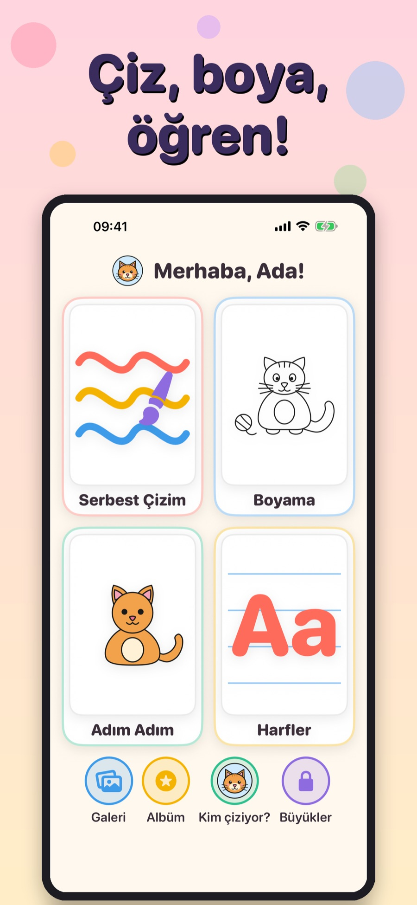
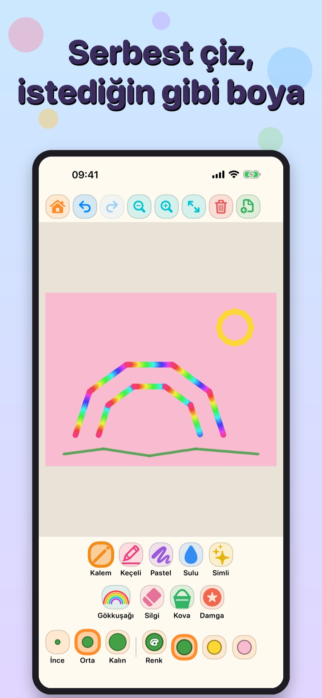
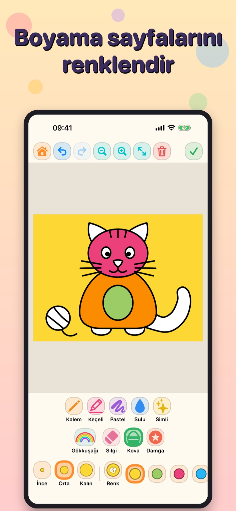
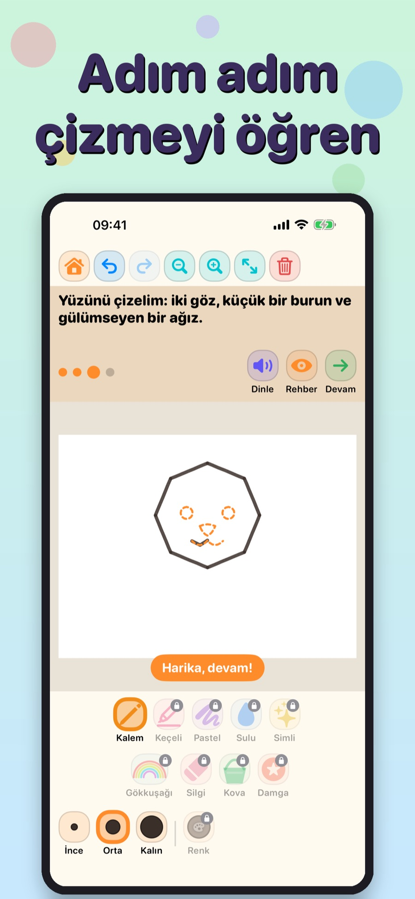
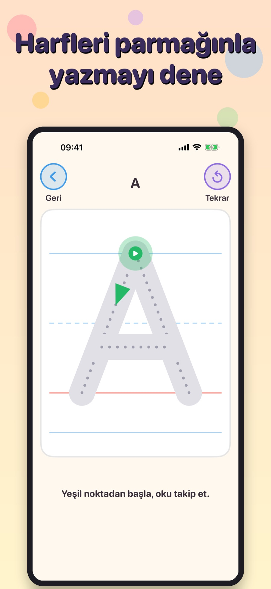
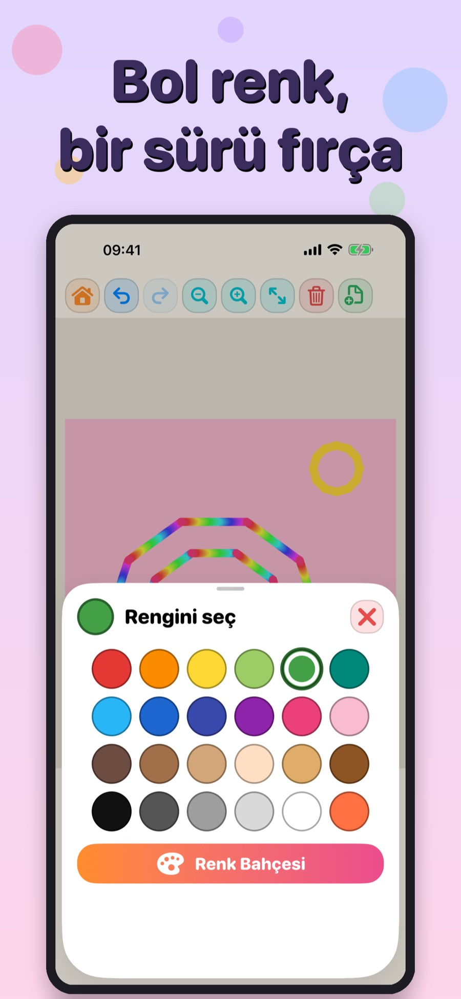
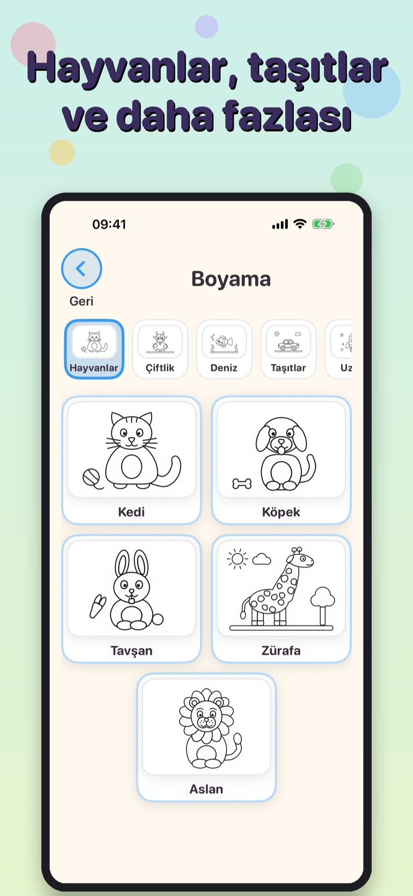
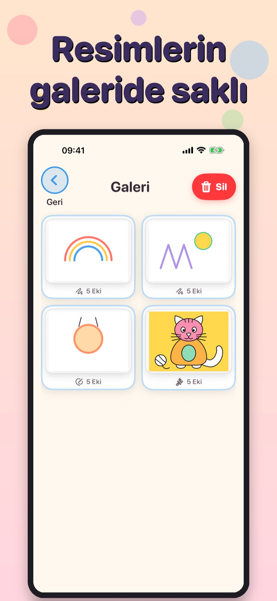
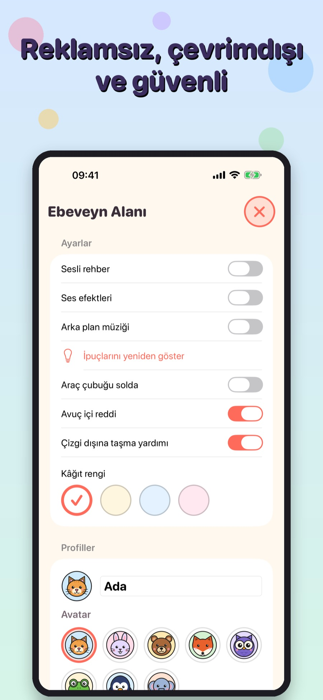

Bilgi formu
- Geliştirici
- Ferman Akgün
- Platform
- iPad ve iPhone, iPadOS/iOS 17+
- Gizlilik
- Reklam, analitik ve uygulama içi satın alma yok; veri toplamaz
- Dil
- Türkçe
- Çıkış
- Yakında App Store'da
- Tür
- Çizim ve boyama
- Çevrimdışı
- Evet, internet gerekmez
- İletişim
- fermanakgun@gmail.com
Hakkında
Fırça Bahçesi, çocukların sakin ve güvenli bir ortamda çizip boyadığı, harfleri ve şekilleri eğlenerek öğrendiği bir çizim uygulamasıdır.
Serbest Çizim'de kalem, keçeli kalem, pastel, sulu boya, simli kalem, gökkuşağı fırçası, silgi, kova ve damgalarla parmakla ya da Apple Pencil ile çizilir. Boyama bölümünde hayvanlar, çiftlik, deniz, taşıtlar ve daha birçok kategoride sayfalar vardır.
Adım Adım bölümünde kesikli çizgileri izleyerek çizim öğrenilir; her adımı sesli rehber okur. Harfler bölümünde Türkçe alfabe ve rakamlar parmakla yazılarak öğrenilir. Resimler çocuğun galerisinde saklanır, çıkartma albümü her yeni resimle dolar.
Öne çıkanlar
- Serbest çizim: 9 araç, 24 renk, geri al ve yinele
- 50 boyama sayfası, 10 kategori; kova ile tek dokunuşta doldurma
- Adım adım çizim dersleri, sesli rehber
- Harf ve rakam izleme, her harf için kelime kartı
- Galeri ve çıkartma albümü; çocuk profilleri
- Apple Pencil: basınç ve eğim, avuç içi reddi
- Reklam yok, veri toplama yok, tamamen çevrimdışı
- Ebeveyn alanı ve ayarları
Ekran görüntüleri
Görsele tıklayarak büyütebilirsiniz. Uygulama Türkçedir.
iPhone

















